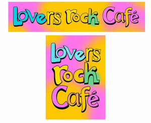

Trade Mark Journal No.2025/009 28 February 2025
UK00004134993 10 December 2024 (41,43)

- Class 41
- Night club services [entertainment]; Club services [entertainment]; Club entertainment services; Fan club services (entertainment); Club [discotheque] services; Nightclub services [entertainment]; Club [cabaret] services; Karaoke lounge services; Wine tastings [entertainment services]; Dance club services; Entertainment relating to wine tasting.
- Class 43
- Food and drink catering; Catering of food and drink; Catering (Food and drink -); Club services for the provision of food and drink; Food and drink catering for cocktail parties; Serving food and drink in restaurants and bars; Providing food and drink in restaurants and bars; Catering of food and drinks; Food and drink catering for banquets; Serving food and drink for guests in restaurants; Provision of food and drink in restaurants; Providing food and drink for guests in restaurants; Serving food and drink for guests; Beer bar services; Food and drink catering for institutions; Providing food and drink; Providing of food and drink; Serving food and drink in doughnut shops; Providing food and drink for guests; Take-away food and drink services; Provision of food and drink; Takeaway food and drink services; Wine bar services; Bar and restaurant services; Restaurant and bar services; Snack bar services; Preparation of food and drink; Night club services [provision of food]; Coffee bar services; Services for the provision of food and drink; Hookah bar services; Cocktail lounge buffets; Juice bar services; Take away food and drink services; Providing food and beverages; Arranging of wedding receptions [food and drink]; Preparation of food and beverages; Wine bars; Charitable services, namely providing food and drink catering; Bar services.
Anthony Brightly